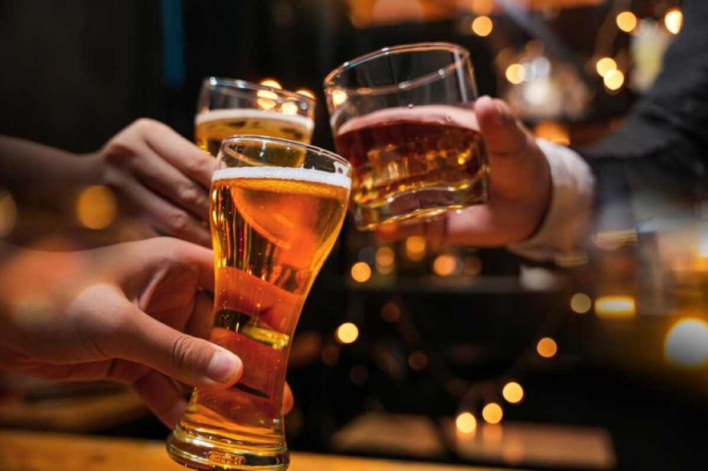
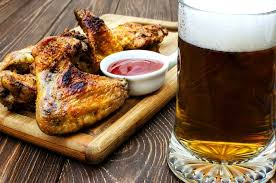
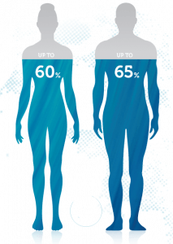

EFFETTI DELL'ALCOL SUL NOSTRO CORPO
La quantità di acqua nel corpo determina anche quanto ci si sente ubriachi dopo aver bevuto dell'alcol: maggiore è la percentuale di acqua, minore è l'effetto dell'alcol. Tutto cio viene influenzato anche dai muscoli infatti più muscolo si ha, maggiore è la quantità di acqua che diluisce l'alcol nel corpo.
Riguardo all'appetito invece nello studio del video gli studenti che hanno consumato alcolici hanno mangiato in media l'11% in più rispetto a quelli che non ne hanno bevuto. La relazione tra alcol e appetito è ancora oggetto di ricerca, ma è chiaro che l'alcol non solo è calorico, ma stimola anche un maggiore consumo di cibo.
  